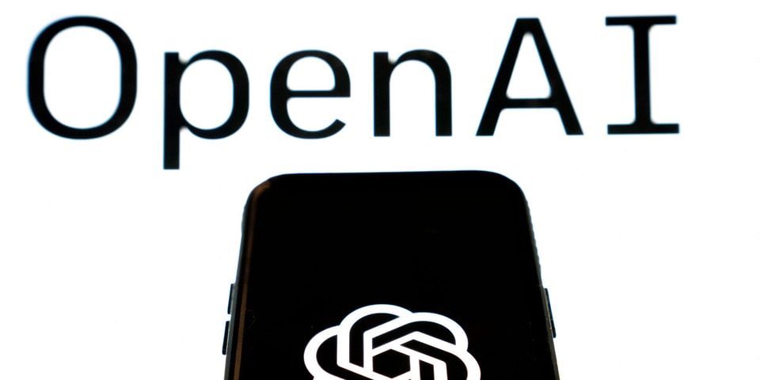

OpenAI Sued for Defamation Due to ChatGPT's False Info
Image Credits https://hypebeast.com/2023/6/openai-chatgpt-sued-radio-host-embezzlement-claim
OpenAI, a San Francisco-based research organization devoted to developing advanced artificial intelligence systems, has recently found itself in hot water over allegedly defamatory statements made by one of its chatbots. ChatGPT, a natural language processing program developed by OpenAI, reportedly accused a radio host of embezzlement, leading to a defamation lawsuit filed against the organization.
Story
The incident began when ChatGPT was asked to comment on a recent news item involving a non-profit organization that Mark Walters, a radio host with WXYZ-AM, had been involved with. According to ChatGPT's response, Walters had allegedly embezzled funds from the non-profit, which prompted an investigation by the organization and led to Walters being fired from his job as a radio host.

However, it later turned out that the accusations made by ChatGPT were false, and Walters had not embezzled any funds from the non-profit. In fact, Walters' involvement with the organization had been purely voluntary, and he had never been authorized to handle any of its finances. As a result, Walters was vindicated and decided to take legal action against OpenAI for the damage caused to his reputation.
"I was completely blindsided by the accusations made by ChatGPT. I had never even heard of the non-profit in question before, let alone embezzled any funds from it. The damage to my reputation has been significant, and I feel that OpenAI needs to be held accountable for allowing this misinformation to be spread."
OpenAI has yet to comment on the lawsuit, but it is likely that the organization will face significant legal and reputational consequences if found guilty of defamation. The incident has also raised concerns about the accuracy and reliability of chatbots and other artificial intelligence systems, and has highlighted the need for greater oversight and accountability in the development and deployment of these technologies.
Impact
The false accusations made by ChatGPT against Mark Walters have had a significant impact on his personal and professional life. Walters not only lost his job as a radio host, but he also suffered damage to his reputation and was subjected to public scrutiny and criticism.
Moreover, the incident has cast a shadow over OpenAI's reputation as a leading research organization in the field of artificial intelligence. The fact that one of its chatbots made false accusations that resulted in a defamation lawsuit has raised questions about OpenAI's internal processes and quality control measures, and has damaged the organization's credibility and standing in the scientific community.
Finally, the incident has highlighted the broader ethical and legal implications of artificial intelligence and natural language processing. As these technologies become more advanced and wide-spread, there is a growing need for clear guidelines and regulations to ensure that they are developed and deployed in a manner that is safe, ethical, and accountable.
Lessons Learned
The lawsuit against OpenAI and the false accusations made by ChatGPT offer several important lessons for the development and deployment of artificial intelligence and natural language processing systems. These lessons include:
- The importance of accuracy and reliability: Chatbots and other AI systems must be designed and trained to provide accurate and reliable information to users. This includes implementing robust quality control measures and regularly testing and evaluating the performance of these systems.
- The need for accountability and transparency: Organizations that develop and deploy AI systems must be held accountable for their actions and be transparent about their development and deployment processes. This includes ensuring that users are aware of the limitations and potential biases of these systems, and providing clear channels for feedback, complaints, and redress.
- The risks of defamation and misinformation: The incident with ChatGPT highlights the risks of defamation and misinformation that can arise from the use of AI systems. Organizations must take steps to mitigate these risks and ensure that their systems provide accurate and reliable information to users.
References
For more information about the incident and its impact, please consult the following resources:
Curated by Team Akash.Mittal.Blog
Share on Twitter Share on LinkedIn